Fortinet Enterprise Networking & Security Daily Study
Wednesday, November 4, 2026 · Documentation-led feature mechanics, field troubleshooting evidence, architecture diagrams and a graded 50-question examination.
Run Status PARTIAL
PARTIAL — content generation completed; research breadth and public delivery remain limited. The report contains 12 substantive lessons (6,849 words), 12 editable draw.io diagrams, 12 standalone SVG diagrams and exactly 50 graded MCQs with 200 choice-specific feedback explanations. The 156-record prior-30-day exclusion inventory was built from actual published reports and committed/read back before topic selection.
30-day discoverySUCCESS — 156 published lesson records inventoried across 2026-10-05 to 2026-11-03.
Semantic exclusionSUCCESS — 12 new feature/workflow fingerprints reviewed against the inventory.
Primary documentationSUCCESS — every lesson uses authoritative Fortinet admin/configuration/release documentation; Community sources are not used as primary lesson sources.
Community sweepPARTIAL — 12 product areas searched; recent scenario findings verified for 7. No recent product-specific technical scenario was verified for FortiAnalyzer, FortiSwitch, FortiPAM, FortiSIEM or FortiSASE.
LessonsSUCCESS — 12 lessons, 519–641 focused words each.
DiagramsGENERATED — 12 editable draw.io XML and 12 standalone SVG assets; repository read-back/structural validation is recorded separately.
ExamSUCCESS — exactly 50 graded MCQs, 4 plausible options each, 200 per-choice feedback explanations.
GitHub / PagesPENDING — report, asset and index read-back plus Pages verification will be updated after publication.
EmailNOT RUN — email delivery is disabled; no email was sent.
Remediation: continue targeted Community searches for the five products without verified recent scenarios; inspect any newly discovered article before promoting it to a question scenario. If Pages verification is inaccessible, retain the confirmed GitHub artifact and retry the public URL separately.
Today's study focus
Today's topics are deliberately mechanism-diverse: hashed URL/SNI feeds, FortiManager ZTP, FortiAnalyzer-to-FortiGate alert automation, MCLAG split-brain protection, captive-portal authentication, FortiNAC MAC quarantine, FortiNAC-F SAML SSO, LDAP group projection into FSSO, FortiPAM gateway chaining, FortiSIEM Automation Policies, API-based CASB DLP and SD-WAN QoS shaping.
Learning order: understand each control/data-plane transaction, identify which object owns each state transition, then verify the evidence boundary before changing configuration. The Community findings below are scenario context only; the feature mechanics are sourced from Fortinet documentation.
Pre-generation 30-day exclusion inventory · Selected topic fingerprints · Lesson bank · Question bank · Diagram manifest · Community sweep
Lesson navigation
01
FortiGate — Hashed URL and SNI threat feeds for Web Filter
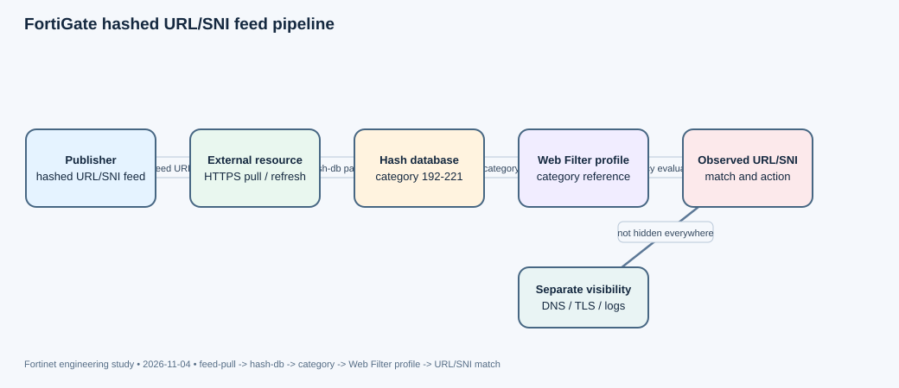

Purpose and design boundary
FortiOS 8.0.0 adds external hash-based URL and SNI lists for Web Filter profiles (feature 1171657). The value is not simply “another blocklist.” A publisher can distribute indicators in a hash database so the firewall can match the supported URL/SNI representation without needing a plaintext URL list in the feed. This is useful when the feed publisher does not want to expose its full indicator corpus to every consuming appliance. It does not make the destination invisible to every other inspection or logging subsystem: DNS, IP, TLS metadata, application logs, and endpoint telemetry remain separate visibility planes.
Objects and transaction flow
The control object is config system external-resource. It identifies the resource URL, status, refresh interval, update method, optional authentication, source interface/IP, VRF, and server certificate validation behavior. FortiOS exposes threat-feed-hash-mode with hash-db and plain-text-db; plain-text is the documented default. The release feature specifically adds hash-based URL/SNI lists for Web Filter. A feed configured in the wrong mode can be fetched successfully yet never produce the intended matches.
The documented example creates a resource named hash, assigns a custom category, selects hash-db mode, and points to the publisher URL. The firewall retrieves the resource on its refresh schedule (the CLI reference gives a 1–43200 minute range and a five-minute default). The resulting category must then be used by the Web Filter configuration that handles the traffic. Feed ingestion and policy enforcement are two separate stages: a healthy connector does not prove that the active policy references its category.
config system external-resource
edit "hash"
set category 192
set threat-feed-hash-mode hash-db
set resource "https://feeds.example.net/fortigate/url-sni-hashes"
set refresh-rate 5
set server-identity-check full
next
endThe resource URL and category above are illustrative; use the publisher's actual feed endpoint and the category allocation approved for the VDOM. The CLI reference documents certificate checking modes and source-interface/VRF selection. Prefer full server identity checking for an HTTPS feed, and ensure the FortiGate can resolve and reach the feed host using the intended egress path.
Verification and diagnostic boundaries
First verify the external-resource object is enabled, the configured mode is hash-db, the category is the one expected by the Web Filter profile, and the last refresh completed. Then run a controlled positive test using an indicator explicitly supplied by the publisher and a benign negative control. Confirm the Web Filter log identifies the expected category and action. If the connector refreshes but no traffic matches, inspect the profile and policy path before changing the feed URL. If no refresh occurs, investigate DNS, routing, source IP, proxy requirements, TLS certificate trust, and publisher authentication.
Do not infer a particular digest algorithm, URL canonicalization rule, or hash length from the CLI field name. The cited Fortinet documentation establishes hash-db mode and URL/SNI use, but the feed producer must follow the supported format for the target release. A locally generated SHA-256 list is not automatically compatible merely because it is hashed. Keep the publisher format, firmware release, VDOM category, and profile binding in the change record.
Operational use
Roll out a new feed first to a monitor/logging policy or a small pilot VDOM, validate both positive and negative matches, then extend it to blocking profiles. Monitor refresh failures and false positives separately. A feed that becomes stale is a different risk from a false-positive match; dashboards should report both connector health and enforcement outcomes.
Primary Fortinet documentation
- New features or enhancements — FortiGate / FortiOS 8.0.0 — authoritative release feature description, feature 1171657
- config system external-resource — FortiGate CLI Reference 8.0.0 — authoritative object fields, refresh, update method, hash-db mode and server identity checks
Community sweep: no directly matched recent scenario was verified for this exact feature. Community findings for this product are listed in the sweep section; they were not promoted to primary lesson sources.
02
FortiManager — Zero-touch provisioning with model devices, auto-link and pre-run templates
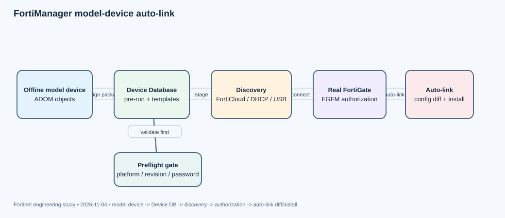

Purpose: pre-stage a device before it exists on the wire
FortiManager zero-touch provisioning is designed for new FortiGate deployments where the intended configuration can be prepared centrally before the appliance is connected. The administrator creates an offline model device, associates the intended configuration and policy objects, and lets the real appliance discover FortiManager. During auto-link, the real device is authorized, receives the staged configuration, and replaces the model entry as the managed device. Low-touch provisioning uses the same model-device concept but requires some initial FortiGate network or manager-location configuration.
Discovery and control-plane sequence
FortiManager documents three common ZTP discovery paths: FortiCloud/FortiDeploy, DHCP Option 240/241, and USB boot configuration. In the FortiCloud path, the factory-default FortiGate obtains WAN connectivity through DHCP, contacts FortiCloud, and learns the FortiManager location. With DHCP Option 240/241, the DHCP service provides both network addressing and the FortiManager location. USB boot provides initial configuration locally. LTP is appropriate when a technician must configure network settings or the manager address first.
Do not assume DHCP Option 240/241 works on every port or after arbitrary staging. Fortinet documents that this method only works on models whose selected WAN interface is already a DHCP client in factory-default state; if a setting is modified, the FortiGate no longer accepts those options. Model selection and factory-default behavior therefore belong in the deployment design, not in a late troubleshooting note.
What auto-link actually installs
FortiManager separates the ADOM Database from the per-device Device Database. The ADOM Database holds shared objects, policy packages, and provisioning templates. The Device Database holds the complete configuration intended for an individual FortiGate. During installation, FortiManager copies relevant ADOM objects into the Device Database, retrieves the live configuration, computes a difference, and installs the difference—not a blind line-by-line replay of the original template content.
For model devices, Pre-Run CLI/Jinja templates execute once in the model Device Database after the Add Device wizard completes. They are then unassigned. The documented model-device sequence applies pre-run templates, system templates, pre-VDOM CLI, threat-weight, IPsec, static route, BGP, SD-WAN, AP, FortiSwitch, FortiExtender, policy package, and post-VDOM CLI content. This ordering matters when a later policy references an interface or object created by an earlier template.
Configuration example and preflight
Use Device Manager > Add Device > Add Model Device, select the supported platform and firmware, enable auto-link as appropriate, assign provisioning templates and policy packages, and define enforced firmware/configuration behavior. A pre-run CLI template is suitable for one-time model initialization, such as creating required interfaces on a FortiGate-VM. It is not a recurring post-install template for every live device.
diagnose dvm supported-platforms listUse this command to confirm that the FortiManager release recognizes the target platform and firmware. If enforcing device configuration, be careful with management-interface settings: Fortinet warns that a bad management-interface configuration can prevent the newly linked FortiGate from reconnecting to FortiManager.
Failure isolation
If the device never appears, investigate discovery, DHCP, FortiCloud registration, USB configuration, and FGFM reachability before editing policy objects. If it auto-links but fails to install, inspect the auto-link task and install preview, the Device Database, firmware compatibility, and the assigned revision. A model device intended to overwrite a new appliance is not a safe migration mechanism for a live firewall whose existing configuration must be preserved. Fortinet explicitly recommends pre-installing a policy package assigned to a model device before bringing the real device online; a package targeted only at a device group is not automatically installed during auto-link.
Also import the model's intended configuration revision and ensure FortiManager knows the existing administrator password where required. Otherwise the first auto-push can fail because FortiGate will not allow the administrator password to be unset without knowing the current value. Treat ZTP as a transaction with a preflight, an authorization stage, a Device Database build, and a final live-device diff—not as a single “plug it in” event.
Primary Fortinet documentation
- Zero-touch and low-touch provisioning — FortiManager 7.6.6 — authoritative ZTP/LTP discovery and model-device lifecycle
- Sequence of operations for installation to managed devices — FortiManager 7.6.6 — authoritative ADOM/Device Database copy, template order and auto-link behavior
- Adding offline model devices — FortiManager 7.6.6 — authoritative model-device settings, firmware enforcement and configuration safeguards
Community / troubleshooting context (scenario only)
- LDAPS configuration erased after FortiManager upgrade — 2026-10-26; adjacent upgrade/configuration-preservation scenario; not the ZTP lesson source
- Install failure on 2 GB RAM FortiGates after FortiManager 7.6.8 upgrade — 2026-10-23; adjacent platform-capability and install-verification scenario
03
FortiAnalyzer — Alert-handler automation stitches from FortiAnalyzer into FortiGate actions
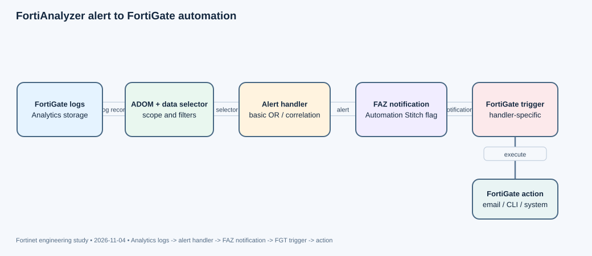

Purpose: move from an alert to a controlled response
FortiAnalyzer alert handlers analyze ingested logs and produce alerts. With Automation Stitch enabled on a handler, FortiAnalyzer can also notify the FortiGate automation framework. The important architectural boundary is that FortiAnalyzer detects and sends the notification; the FortiGate must already have a matching automation trigger and owns the action that follows. This avoids treating a FortiAnalyzer alert as an unrestricted remote command.
Detection plane and handler objects
A basic alert handler generates an alert when any enabled rule matches (OR semantics). A correlation handler evaluates a sequence using operators such as AND, AND_NOT, OR, FOLLOWED_BY, and NOT_FOLLOWED_BY. A data selector determines which devices, subnets, and log filters are in scope. A notification profile determines how the alert is delivered. The alert handler combines its attributes, rules, data selector, optional incident creation, and Automation Stitch setting.
Fortinet documents that alert handlers generate alerts from Analytics logs, not Archive logs. In Analyzer–Collector collaboration, the Analyzer evaluates the handlers. With ADOMs enabled, each ADOM has its own alert handlers and alert list; verify the active ADOM before troubleshooting a missing alert. A handler can be technically enabled but still receive no qualifying records because its data selector or log type excludes them.
End-to-end transaction
All FortiGates added to FortiAnalyzer have a default high-severity alert handler such as Default-Botnet-Communication-Detection, with Automation Stitch enabled. Custom handlers can enable the same option. When the handler produces an alert, FortiAnalyzer sends a notification to the FortiGate. The FortiGate then matches the notification to a locally configured trigger for that handler and executes the associated stitch actions—such as an email, CLI script, or system action. The alert remains visible in FortiAnalyzer under Incidents & Alerts > Alerts.
For a custom handler, create the alert handler in Incidents & Alerts > Alert Handlers, define its data selector and rules, and enable Automation Stitch. On the FortiGate, ensure FortiAnalyzer logging is configured and create the matching automation trigger for that handler. Do not assume that enabling the FAZ-side checkbox automatically creates the FortiGate trigger.
Verification: prove each boundary separately
- Confirm the relevant device logs are arriving in Analytics storage and the correct ADOM is selected.
- Confirm the data selector includes the device, log type and fields used by the rule.
- Confirm the handler is enabled and the rule condition actually matches; verify the alert appears in FortiAnalyzer.
- Confirm the Automation Stitch column is enabled for the handler.
- On FortiGate, confirm FAZ logging is configured and a trigger exists for that alert handler; then verify the FortiGate system event and the action's own evidence.
An alert in FortiAnalyzer proves detection, not successful notification delivery. A notification received by FortiGate proves the integration path, not that the correct action ran. A successful CLI script or email proves the action executed, not that the endpoint remediation succeeded. Keep these as separate validation checkpoints.
Operational cautions
Start with a harmless test action and a narrowly scoped selector. Use a correlation handler only when event order or multiple conditions matter; otherwise a basic handler is easier to reason about. Avoid broad selectors and high-impact actions until alert volume, suppression behavior, and action idempotency are understood. If a handler is duplicated across ADOMs or FortiAnalyzer units, verify the exported/imported selector and trigger names on each target.
Primary Fortinet documentation
- Using the Automation Stitch for alert handlers — FortiAnalyzer 8.0.0 — authoritative FAZ-to-FortiGate notification flow and prerequisites
- Creating a custom alert handler — FortiAnalyzer 8.0.0 — authoritative handler attributes, data selector, rules and stitch toggle
- Alert handlers — FortiAnalyzer 8.0.0 — authoritative basic/correlation handler behavior and Analytics-versus-Archive boundary
Community sweep: no directly matched recent scenario was verified for this exact feature. Community findings for this product are listed in the sweep section; they were not promoted to primary lesson sources.
04
FortiSwitch — MCLAG inter-chassis link failure and split-brain prevention
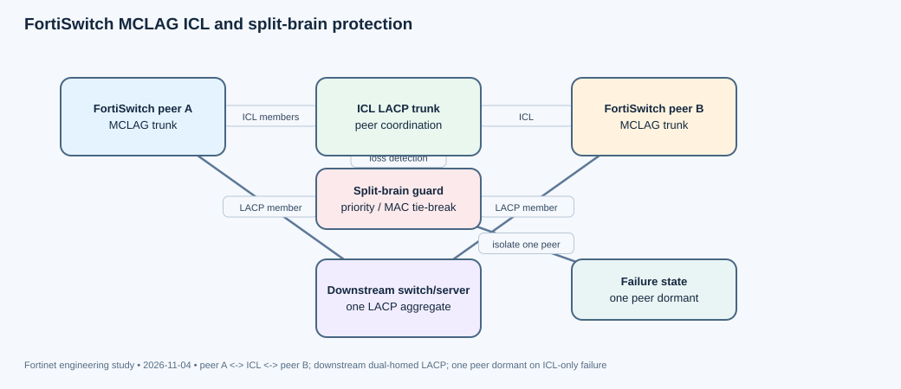

What MCLAG is solving
Multi-chassis link aggregation lets a downstream device build one LACP bundle across two FortiSwitch peers. The downstream switch or server sees a single logical aggregate even though member links terminate on different physical switches. The two FortiSwitch peers coordinate through an inter-chassis link (ICL). The ICL is not merely another user-facing trunk: it carries peer coordination needed to keep the two halves of the logical LAG consistent.
Objects and configuration relationship
Fortinet's example creates an LACP-active trunk on each peer and marks it as the MCLAG ICL with set mclag-icl enable. A separate trunk on each peer is marked with set mclag enable and connects to the downstream dual-homed device. The downstream device configures one LACP-active aggregate whose member ports connect to both peers. The ICL trunk and the downstream MCLAG trunk are different objects with different roles; confusing them makes troubleshooting difficult.
config switch trunk
edit "MCLAG-ICL-trunk"
set mode lacp-active
set mclag-icl enable
set members "port15" "port16"
next
edit "first-mclag"
set mode lacp-active
set mclag enable
set members "port7" "port8"
next
end
config switch global
set mclag-split-brain-detect enable
endApply the corresponding ICL and MCLAG configuration to the second peer using its actual port map. Fortinet documents split-brain detection as disabled by default. The documented default interval before declaring a split-brain state is 60 seconds, and it can be increased up to 600 seconds.
Failure mechanics
A split-brain condition is specifically an ICL communication failure while both peers are still processing traffic. Without protection, each peer may continue forwarding independently and the logical dual-homed topology can become inconsistent. With split-brain detection enabled, one peer becomes dormant while the other remains active and forwarding. When ICL communication is restored and LACP re-establishes the trunk, the dormant peer becomes active again.
FortiSwitchOS supports a configurable split-brain priority from 0 to 100, default 50. The peer with the lower priority value becomes dormant. If priorities match, the peer with the numerically lower MAC address becomes dormant. An optional all-ports-down behavior can shut down all ports on the dormant peer while leaving ICL ports unchanged. This makes the isolation more explicit but also increases the number of endpoints that lose connectivity during the event.
Important release and topology caveats
Starting in FortiSwitchOS 7.4.1, the switch can distinguish an ICL-down event from a peer switch that is actually down or restarting, avoiding an unnecessary all-ports-down response. Fortinet states this behavior requires at least one dual-homed FortiSwitch connected to the MCLAG peer group. Starting in 7.6.2, a dual-homed connection to third-party switches is supported in specified topologies; however, the split-brain priority command is not supported when third-party switches are present. Validate the exact topology and release before relying on the priority tie-break.
Verification and troubleshooting
Check physical ICL members first, then LACP state on the ICL trunk, peer communication, the dual-homed downstream LAG, and the configured split-brain timer/priority. A peer that is dormant after an ICL-only failure is evidence that split-brain protection acted; it is not proof that the ICL itself is healthy. After restoring the ICL, verify that LACP and peer state recover and that the downstream aggregate returns to its intended member set. If a peer reboot is mistaken for an ICL-only failure, verify the FortiSwitchOS release and the presence of a dual-homed FortiSwitch in the topology.
Primary Fortinet documentation
- MCLAG — FortiSwitchOS 8.0.0 Administration Guide — authoritative MCLAG, ICL and split-brain behavior
- MCLAG — current FortiSwitch Administration Guide — current split-brain timeout and priority details
Community sweep: no directly matched recent scenario was verified for this exact feature. Community findings for this product are listed in the sweep section; they were not promoted to primary lesson sources.
05
FortiAP/Wireless — Captive portal security and external portal transaction flow
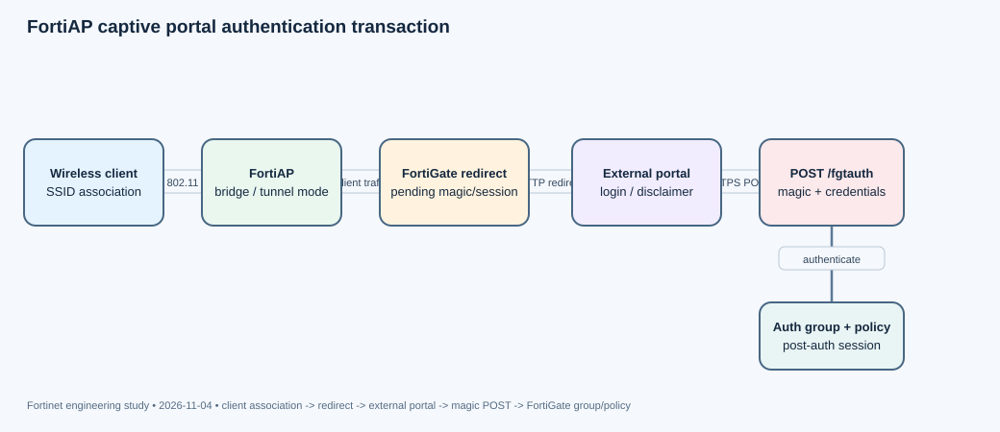

Separate association from authorization
A client can successfully associate to a FortiAP SSID and still be unable to reach the network because captive portal authentication has not completed. In a FortiGate-managed wireless deployment, the AP provides radio access and forwards the client traffic into the configured SSID traffic mode; FortiGate owns the captive-portal redirect, authentication, group mapping, and firewall policy decision. Treat 802.11 association, portal authentication, and post-authentication authorization as separate state transitions.
External portal transaction
An external captive portal is a web page hosted on a separate server. The page presents the organization’s login, disclaimer, or registration experience, but it must return a specifically formatted POST to FortiGate. Fortinet documents the endpoint as https://<FGT_IP>:1000/fgtauth. The POST includes the magic value from the original redirect plus the username and password. The magic value ties the browser's return to the pending authentication transaction. If a portal template drops, caches, or replaces it, the browser can display a successful login while FortiGate cannot complete the original session.
config user setting
set auth-secure-http enable
end
config wireless-controller vap
edit "wifi-vap"
set ssid "Fortinet-Captive"
set security wpa3-sae
set captive-portal enable
set external-web "portal.example.net"
set selected-usergroups "Guest-group"
set schedule "always"
next
endThe example illustrates the documented tunnel-mode configuration. The external-web value is the portal host name or IP; do not include the http:// or https:// scheme in that field. Enable HTTPS for credential submission using auth-secure-http. Select the permitted user group deliberately: a valid username is not sufficient if its group is not permitted by the portal or subsequent policy.
Walled garden and traffic path
Before authentication, the user is confined to a walled garden. The portal page, DNS, certificate chain, identity provider, and any required static assets must be reachable before the user has a normal network session. If the portal depends on a hostname but DNS is not allowed pre-authentication, the user sees a blank page or redirect loop even though the SSID is functioning. The portal's certificate must also match the hostname the client actually visits.
Fortinet documents external captive portals for tunnel mode and local-bridge mode. The exact traffic path and where policy enforcement occurs depend on the SSID mode. Verify the mode before applying a troubleshooting procedure written for a different deployment. A captive portal is not a replacement for enterprise 802.1X authentication when device/user certificate-based network admission is required.
Verification ladder
- Confirm the client associates and receives the expected IP address/VLAN.
- Capture the initial HTTP redirect and confirm the portal hostname is reachable before authentication.
- Inspect the POST to
/fgtauth; verify the original magic value and expected user fields are present. - Confirm FortiGate records a successful authentication and the intended user group.
- Test a post-authentication destination and verify the firewall policy, NAT and DNS path.
A successful POST proves that the portal returned credentials; it does not prove that the user matched the allowed group or that a later firewall policy permits traffic. Conversely, a client that never receives a redirect points to the SSID/portal configuration or initial HTTP behavior, not to an invalid password. Keep those evidence boundaries separate when triaging.
Primary Fortinet documentation
- Captive Portal Security — FortiAP / FortiWiFi 7.6.3 — authoritative external portal flow, POST fields and HTTPS setting
Community / troubleshooting context (scenario only)
- FortiAP 231K repeated cwWtpd/lldpd restarts and CAPWAP failure — 2026-10-19 to 2026-10-22; recent adjacent wireless control-plane scenario; not a captive-portal failure
06
FortiNAC — Security Fabric quarantine action and MAC-level endpoint isolation
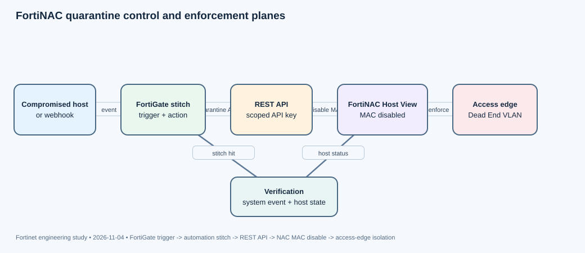

What the action changes
“Quarantine via FortiNAC” is not simply an IP block on FortiGate. The FortiGate automation stitch invokes FortiNAC, and FortiNAC disables the endpoint's MAC address in its managed network inventory. The access layer then enforces the disabled-host state. This makes the action useful when the endpoint can move between ports or wireless access points: the response is based on the endpoint identity known to NAC, not only the IP address observed in one firewall session.
Control-plane relationship
FortiNAC is added to the Security Fabric as a service connector from Network > Service Connectors, using the root FortiGate address and port 8013. Fortinet documents certificate-capable licensing requirements and minimum FortiOS compatibility for supported FortiNAC releases. On the FortiGate, create an automation stitch with a Compromised Host or Incoming Webhook trigger and the Quarantine via FortiNAC action. The action uses a REST API administrator key; create a dedicated API admin, restrict its trusted hosts and VDOM scope, and place the key in the stitch rather than reusing a human administrator credential.
For an incoming webhook, the payload must identify the endpoint using the expected fields, including the source IP and MAC address (and FortiClient UID where applicable). A valid webhook request can trigger the stitch even when the MAC is not the one that should be quarantined, so validate the payload and source permissions. The FortiGate event is the trigger plane; FortiNAC's host record and access-layer enforcement are the remediation plane.
Enforcement prerequisites
FortiNAC must be configured to isolate disabled hosts. For endpoints on FortiWiFi or wired FortiGate ports, configure the required FortiNAC endpoint-management integration. For FortiAP and FortiSwitch access, set the Dead End VLAN in the model configuration. FortiSwitch deployments also require the switch to be in the physical address filtering group. If these settings are missing, FortiNAC may mark the host disabled while the endpoint continues to pass traffic through an access device that has not been configured to enforce the state.
Configuration and evidence
Fortinet's documented sequence is: create the automation stitch; create a REST API admin and copy its key; add the key to the stitch; send a test webhook; verify the system event and last-triggered time; then inspect the FortiNAC Host View. A CLI configuration uses an automation action of type quarantine-fortinac, an incoming-webhook trigger, and an automation-stitch object that binds the two.
config system automation-action
edit "quarantine-fnac"
set action-type quarantine-fortinac
next
end
config system automation-trigger
edit "quarantine-webhook"
set event-type incoming-webhook
next
endTo inspect stitch state, the FortiGate guide includes diagnose test application autod 2. The FortiGate event log proves that the trigger fired; it does not prove the host was disabled. FortiNAC Host View must show the host quarantined and the MAC disabled. Then test from the endpoint and confirm it lands in the intended isolation network.
Operational troubleshooting
If the stitch never fires, inspect the trigger type, webhook URL, API key and FortiGate system event. If it fires but FortiNAC does not change state, verify Security Fabric connector health, license, API reachability, payload MAC and FortiNAC logs. If the MAC is disabled but the host still has production access, inspect the access-device model, dead-end VLAN and physical-address filtering group. These are three different failures and should not be collapsed into “quarantine failed.”
Primary Fortinet documentation
- Security Fabric Connection — FortiNAC 9.4.0 — authoritative FortiNAC Security Fabric connector and compatibility requirements
- Quarantine via FortiNAC action — FortiGate / FortiOS 6.4.9 — authoritative automation trigger, API key, MAC disable and enforcement prerequisites
Community / troubleshooting context (scenario only)
- Checking DNS when Winbind reports WBC_ERR_WINBIND_NOT_AVAILABLE — 2026-10-14; recent FortiNAC/F identity dependency case; adjacent to quarantine
- RADIUS-only network device integration — 2026-10-12; recent FortiNAC 7.6.7+ device-integration capability; not the quarantine lesson source
07
FortiNAC-F — User SAML SSO for captive portal with attribute-based group assignment
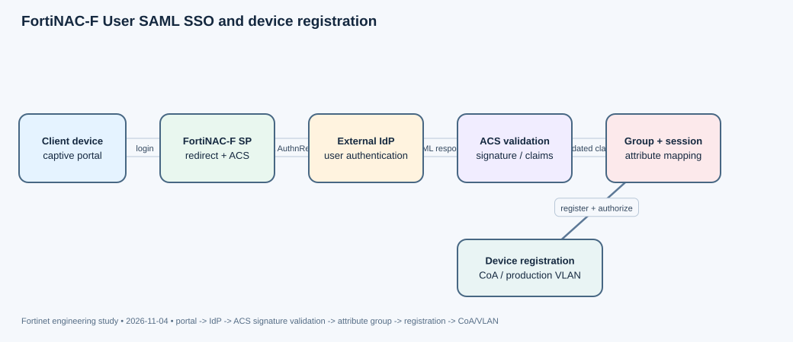

Purpose and identity boundary
FortiNAC-F 7.6.3 adds User SAML SSO for captive-portal users. The user authenticates at an external identity provider, while FortiNAC remains responsible for the network-access session, group assignment and device-registration workflow. Multiple User SAML SSO connectors are supported, and custom attribute mapping lets FortiNAC select a group and access policy from SAML assertion values. This is distinct from FortiNAC administrator SSO: this lesson concerns end-user access through the captive portal.
Authentication and registration transaction
The documented sequence is: a device reaches the captive portal; the user selects the User login method; FortiNAC redirects the browser to the configured IdP; the IdP authenticates the user and returns the SAML response to FortiNAC; FortiNAC creates a temporary or permanent user session and assigns the user to the matching FortiNAC group; if configured, the user then sees a modified registration page to register the device. That final registration step matters for shared devices such as gaming consoles, printers or unmanaged endpoints: an authenticated person and a registered device are related but not identical records.
Attribute mapping is the policy bridge. A SAML response can be cryptographically valid yet still fail to select the intended FortiNAC group if the IdP sends a different attribute name, value format or group identifier than the FortiNAC connector expects. Conversely, a valid group assignment does not prove the device registration or VLAN transition completed.
Configuration dependencies
Use the FortiNAC-F 7.6.3 SAML SSO guide and release notes as the primary reference. Configure the SAML connector with the correct IdP metadata, signing certificate, SP entity ID and Assertion Consumer Service URL. Keep the captive portal's externally visible FQDN consistent with the SP metadata and the address users actually browse to. Import the full issuing certificate chain into the trust store used for SAML validation. Configure the attribute mapping for the FortiNAC group and ensure the resulting group has the intended network-access policy.
Do not treat a browser redirect loop as proof that the IdP password is wrong. A loop can occur after the IdP has successfully authenticated the user if the ACS/portal FQDNs differ, the browser returns to a different host, or the registration stage cannot complete. Keep the authentication callback, user-session creation, registration and RADIUS Change of Authorization as separate checkpoints.
Recent field scenario and evidence interpretation
A Fortinet Community troubleshooting case dated October 27, 2026 describes a User SAML SSO redirect loop caused by an SP URL/portal FQDN mismatch. Its evidence is especially useful: the access log shows an ACS POST followed by a 302; the application log records Signature verified using SignatureValidator, SAML Authentication status: true, and Registration complete; the controller log records a successful RADIUS CoA. The GUI then shows the host registered to an SSO User and moved to the production VLAN.
Those lines prove the assertion was validated and the registration/enforcement transaction completed in the observed test. A 302 alone is not an error; it is an HTTP redirect. If the user still sees a loop, compare the browser's current host, portal FQDN, ACS URL and relay/return URL. Repeat the test after HA failover and confirm the same registration and CoA evidence on the node that becomes active.
Operational troubleshooting order
- Verify the portal FQDN and SP metadata are identical in the browser-visible path.
- Confirm the ACS endpoint receives the POST and SAML signature validation succeeds.
- Inspect the assertion's username and group attributes against FortiNAC mapping.
- Confirm FortiNAC creates the intended temporary/permanent user session.
- Verify registration completion, CoA success, host ownership and production VLAN placement.
Use the earliest failed checkpoint to guide remediation. Rebuilding the IdP application before proving a certificate or FQDN mismatch can make the incident harder to diagnose.
Primary Fortinet documentation
- User SAML SSO — FortiNAC-F 7.6.3 — authoritative user SAML login workflow and attribute-to-group behavior
- What's new in FortiNAC-F 7.6.3 — authoritative SAML SSO enhancements and supported use cases
Community / troubleshooting context (scenario only)
- FortiNAC-F captive portal User SAML SSO redirect loop caused by SP URL/Portal FQDN mismatch — 2026-10-27; direct recent troubleshooting scenario
08
FortiAuthenticator — Including remote LDAP groups in Fortinet Single Sign-On filters
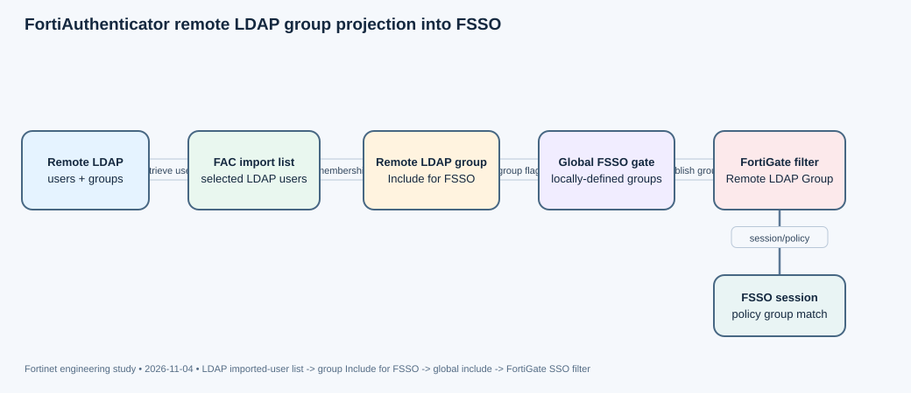

Why this feature matters
FortiAuthenticator 6.6.0 adds a way to include selected remote LDAP user groups in Fortinet Single Sign-On (FSSO). This allows FortiGate filters to use LDAP groups defined on FortiAuthenticator rather than requiring every group to be represented through a separate identity source. It is a group-membership projection feature, not a new LDAP authentication protocol and not a substitute for learning user logon sessions.
Prerequisites and object relationships
The option appears when creating or editing a remote LDAP user group under Authentication > User Management > User Groups. The group type must be Remote LDAP, and User retrieval must be set to Set a list of imported remote LDAP users. The Include for FSSO option is unavailable for the LDAP-filter retrieval mode and is disabled by default. This distinction is operationally important: the imported-user list gives FortiAuthenticator a defined set of remote users to associate with the group before that group can be exposed to FSSO.
There is also a global control under Fortinet SSO > Settings > User Group Membership named Include locally-defined remote LDAP groups. It is disabled by default. Enabling only the per-group checkbox is therefore insufficient if the global FSSO setting remains disabled. Both the group-level and global inclusion controls must permit the group to appear in FSSO filters.
Configuration workflow
- Configure the remote LDAP server and confirm its user object class and group-membership attribute.
- Create or edit a Remote LDAP user group.
- Set User retrieval to the list of imported remote LDAP users and select the users to include.
- Enable Include for FSSO on that group.
- Enable Include locally-defined remote LDAP groups under FSSO User Group Membership.
- In Fortinet SSO > Filtering > FortiGate, edit the relevant filter and select the Remote LDAP Groups object from the SSO users/groups picker.
When building an LDAP group filter, FortiAuthenticator's documentation notes that objectClass and memberOf must align with the user object class and group-membership attribute configured on the remote LDAP server. Use Test Filter where the LDAP-filter retrieval mode is used for other groups; for this feature, validate the imported-user list and membership sync directly.
What to verify—and what not to infer
Confirm the imported remote users are present, the remote LDAP group is populated, the per-group Include for FSSO flag is enabled, and the global inclusion setting is enabled. Then inspect the FortiGate filter object list and verify that the intended Remote LDAP Group is selectable and referenced. Finally, test a user session and verify the expected group is present in the FSSO view and the firewall policy matches it.
An LDAP bind or successful password authentication proves that the directory is reachable and credentials were accepted; it does not prove that the user's group has been imported or exposed to FSSO. Likewise, a group appearing in the filter picker does not prove a current user logon session exists. Keep directory authentication, group projection, FSSO session learning and firewall authorization as separate evidence layers.
Recent troubleshooting context
A Community case dated October 29, 2026 describes an IKEv2 EAP-TTLS authentication that returned a generic EAPPasswordError even though LDAP, FortiToken assignment and RADIUS policy were configured. The discussion identified OTP concatenation/challenge behavior as a separate RADIUS/EAP path. Do not apply that diagnosis to an FSSO group-selection problem: this lesson concerns group projection into FSSO, not EAP challenge completion.
Primary Fortinet documentation
- FortiAuthenticator 6.6.0 new features — FortiAuthenticator 6.6.2 Administration Guide — authoritative FSSO LDAP group feature and global enable control
- User groups — FortiAuthenticator 6.6.0 — authoritative retrieval modes, Include for FSSO prerequisites and group configuration
Community / troubleshooting context (scenario only)
- Resolved EAPPasswordError with IKEv2, EAP-TTLS and FortiAuthenticator 2FA — 2026-10-29; adjacent RADIUS/EAP troubleshooting case; not an FSSO group failure
- Technical Tip: FSSO resource list — 2026-10-12; recent FSSO operational reference
09
FortiPAM — Secret Gateway Chaining with reverse-service mutual TLS
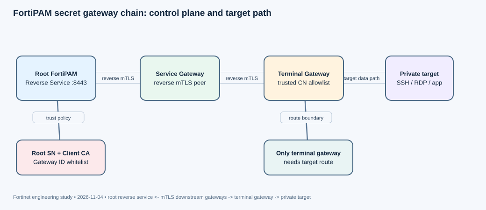

Problem: reach targets behind multiple trust boundaries
FortiPAM Secret Gateway Chaining is designed for environments where the central FortiPAM server is in a public cloud or DMZ, while privileged targets reside behind one or more segmented networks. A traditional forward gateway requires the central FortiPAM to open an inbound connection toward the gateway; that direction may be blocked by edge firewalls. In the reverse model, a downstream gateway initiates the control-plane connection back to an upstream FortiPAM. Version 1.9.0 extends this to dynamically chained gateways.
Control plane and gateway discovery
The root FortiPAM enables Reverse Service under Network > Secret Gateway. The service binds to selected interfaces and a listening port (8443 by default), selects the server certificate and client CA used for mutual TLS, and identifies the root FortiPAM serial number. The root also configures a Gateway ID Whitelist. A downstream gateway's identity is derived from the Common Name (CN) in its certificate; only certificate CNs in the allowlist may establish reverse connections and participate in the chain.
Downstream gateways are configured with the root FortiPAM serial number so they advertise their gateway information to the correct central device. Once the persistent mTLS connection is established, gateway information is automatically advertised upstream. The root FortiPAM can then discover intermediate and downstream gateways without requiring administrators to manually configure every intermediate hop. The reverse connection is a control-plane channel with health checks and reconnection behavior.
Data path and the terminal gateway
The key design rule is that only the terminal gateway in the chain requires direct network connectivity to the target. Intermediate gateways provide the secure chain and do not each need a direct route to the final server. When a secret target is configured, the administrator can choose a dynamic or static gateway. Dynamic selection uses the discovered chain; static selection pins the target to a specific gateway. The chain therefore separates central control-plane reachability from the last-hop target data path.
Root FortiPAM
- Reverse Service: TCP 8443, TLS 1.3
- Server certificate + trusted Client CA
- Root FortiPAM SN + Gateway ID Whitelist
^
| persistent mTLS reverse connection
|
Downstream gateway A -> downstream gateway B -> privileged target
(terminal gateway has target route)Fortinet documents TLS 1.3 as the default maximum version for Reverse Service, with configurable TLS versions. The server certificate authenticates the upstream service, while the client CA validates the downstream gateway certificate. The whitelist checks the gateway certificate CN. These are separate controls: a certificate can chain to a trusted CA yet still be rejected because its CN is not on the gateway allowlist.
Operational verification
On the root, verify Reverse Service is enabled on the intended interface and port, the server certificate is selected, the client CA is correct, the Root FortiPAM SN is populated, and each expected downstream certificate CN is allowlisted. On downstream gateways, confirm the root serial is configured and the reverse service can be reached through the intervening firewalls. Confirm the dynamic gateway list shows the expected chain and that the terminal gateway can resolve and reach the target port.
If the gateway does not appear, inspect the mTLS handshake, CA chain, certificate CN, whitelist and root serial before troubleshooting target reachability. If the gateway appears but a launch fails, verify the terminal gateway's route, DNS, firewall policy and target credentials. A healthy mTLS control channel proves gateway registration, not target connectivity.
Mode and version caveats
FortiPAM also documents Service Gateway mode, where a client can launch directly through a nearby service gateway to reduce latency and central-server load. Service mode requires another FortiPAM device and compatible image versions; some secret protections such as DLP, antivirus scanning or RDP event filtering can force the session back through the central FortiPAM. Keep this distinction clear: dynamic reverse chaining solves gateway reachability and discovery; service mode changes the session data path.
Primary Fortinet documentation
- Secret gateway chaining — FortiPAM 1.9.0 Administration Guide — authoritative chain architecture and mTLS behavior
- Reverse service — FortiPAM 1.9.0 Administration Guide — authoritative port, TLS, certificate, root serial and gateway allowlist settings
- FortiPAM 1.9.0 release features — authoritative new feature summary and gateway permission changes
Community sweep: no directly matched recent scenario was verified for this exact feature. Community findings for this product are listed in the sweep section; they were not promoted to primary lesson sources.
10
FortiSIEM — Automation Policies for incident notification, remediation and case creation
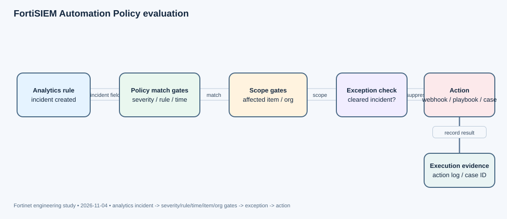

Purpose: centralize response routing across many rules
FortiSIEM Automation Policies replace the older Notification Policy model. Instead of configuring the same notification action independently on every analytics rule, an Automation Policy can be associated with multiple rules and apply shared severity, time, affected-item and organization constraints. The policy is an incident response/routing layer; it does not replace the analytics rule that detects the event or creates the incident.
Policy match model
An Automation Policy can select one or more severities and one or more triggering rules. It also defines a time range during which notifications are active. Affected Items scope the devices or applications that qualify. You can select individual devices, groups, or IP ranges, and explicitly move groups into the NOT Selections column to exclude them. In Service Provider deployments, Affected Orgs restrict the policy to incidents affecting selected organizations. The policy is only effective when enabled.
Think of the policy as a conjunction of gates: incident severity must be selected; its rule must be selected; the incident time must fall inside the policy window; the affected item must be in scope and not excluded; and, for service-provider use, the organization must match. A valid incident can therefore exist without triggering the expected notification if any one of those gates is false.
Available actions
The documented action list includes email, SMS and webhook notification; Run Remediation/Script; Run Playbook on Incident Trigger; invoke an integration policy; create a case; send an SNMP message; send an XML file over HTTP(S); open a Remedy ticket; and invoke FortiAI to update comments. Case creation has additional dependencies: an analyst group must exist under FortiSIEM Analysts, a Case Management Policy must be configured, and the case action is not available at the organization level. Email can target CMDB users, and webhook actions use a separately configured webhook notification.
Automation Policies also have exceptions that suppress notification when an incident is cleared automatically, manually or by the system. Those exceptions are important for noisy environments, but they can hide expected notifications if the operator assumes every incident creation always triggers an action.
Configuration and verification
Go to Admin > Settings > General > Automation Policy. Add a policy, select severity and rules, set the active time range, choose affected devices/applications or IP ranges, configure organization scope if required, select the action, and save. For webhook or email, configure the destination and template separately. For case creation, configure the case policy and analyst group first. Finally, enable the policy using the Enabled column; saving a disabled policy does not activate it.
When troubleshooting, inspect the incident first: rule, severity, timestamp, affected CI/device/IP and organization. Then inspect the policy match criteria and exceptions. If the policy matches but no action appears, verify the action-specific prerequisite—SMTP, webhook destination, script/playbook, integration policy, SNMP/HTTP destination or case management. A detected incident proves the analytics layer worked; it does not prove an Automation Policy matched or executed.
Operational design
Use separate policies for different response classes rather than a single broad policy with many overlapping rules. Keep remediation actions narrow and idempotent, especially when an incident can be updated repeatedly. Test the policy with a known incident and a negative control that should be excluded by time, device or organization. Record the exact policy version, target scope and action evidence so a later analyst can distinguish detection, routing, suppression and execution.
Primary Fortinet documentation
- Automation Policy Settings — FortiSIEM 7.5.1 User Guide — authoritative Automation Policy conditions, actions and exception behavior
Community sweep: no directly matched recent scenario was verified for this exact feature. Community findings for this product are listed in the sweep section; they were not promoted to primary lesson sources.
11
FortiSASE — API-based CASB data protection with FortiGuard and custom DLP patterns
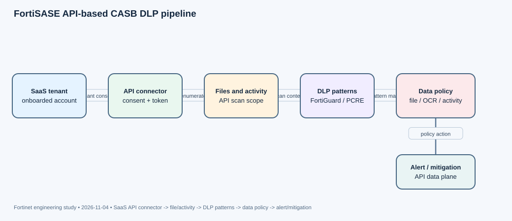

What API-based CASB changes
FortiSASE API-based CASB uses the SaaS provider's API to inspect files and activity in onboarded cloud applications. This is a different inspection plane from an inline secure web gateway: it does not require every user packet to traverse a FortiSASE inspection point. The API integration gives visibility into files and permissions stored in supported SaaS tenants, while policy objects determine which patterns, file types and activities should produce an alert or mitigation action.
Three data-protection objects
Fortinet documents three main components under Security > API-based CASB > Data Protection. FortiGuard patterns provide default DLP patterns for categories including financial information, malware and personal identity information. Custom patterns let administrators define a category, maximum uncompressed file size, maximum compressed file size, matching threshold and PCRE regular expression. Data policies bind patterns to cloud applications and define which file types, permissions and file activities are monitored and what action should follow a data-security alert.
The policy model is therefore more than a regex. A custom pattern may be correct but never evaluated if the data policy does not reference it, the SaaS account is not onboarded, the file type is excluded, or the activity does not match the policy. Likewise, a file can exceed the configured compressed or uncompressed size and fall outside the scan boundary. Document those size limits alongside the pattern itself.
Build the inspection chain
- Onboard the SaaS application account and authorize the API connector with the required tenant permissions.
- Confirm the account is synchronized and the connector can enumerate the intended files and activity.
- Select FortiGuard patterns or create a custom pattern with a realistic PCRE, matching threshold and compressed/uncompressed size limits.
- Create a data policy that binds the pattern to the intended cloud application, file types and file activities.
- Choose the alert and mitigation behavior, and enable OCR scanning for image files where the use case requires text extraction from screenshots or scanned documents.
Fortinet documents a default policy that monitors files across onboarded cloud application accounts using predefined patterns. A custom rule can tailor file types, OCR, access permissions and file-activity triggers. The default is useful for a baseline, but it should not be assumed to match every organization's data-handling policy.
Verification and limits
Verify API account authorization and file synchronization before tuning the regex. Then test a known matching file, a benign control, a file near the configured size boundary, and a file with a different activity such as sharing or permission change. Confirm the alert identifies the correct SaaS application, file and activity, and inspect the mitigation result. An API connector that is healthy proves the control plane can query the SaaS tenant; it does not prove a particular DLP pattern or policy matched.
API-based CASB is not an inline packet filter. It should not be described as guaranteeing that every upload is blocked before it reaches the SaaS service. Its value is API visibility and policy-driven data protection in the onboarded cloud account. Use inline SIA controls for network traffic enforcement and API-based CASB for the SaaS data/activity plane; they complement rather than replace one another.
Operational tuning
Start with a small set of high-confidence patterns, verify file-size boundaries and OCR behavior, then expand. Avoid overly broad regular expressions and low thresholds that create noise. When alerts disappear after an application change, check tenant consent, API token validity and account onboarding before changing the DLP pattern. Keep the API permission set and the SaaS account owner documented because those are dependencies outside the FortiSASE policy object itself.
Primary Fortinet documentation
- Data Protection — FortiSASE Feature Administration Guide — authoritative API-based CASB DLP patterns, custom pattern fields and data policy behavior
Community sweep: no directly matched recent scenario was verified for this exact feature. Community findings for this product are listed in the sweep section; they were not promoted to primary lesson sources.
12
Secure SD-WAN — SD-WAN traffic shaping and QoS profiles with advanced shaping groups
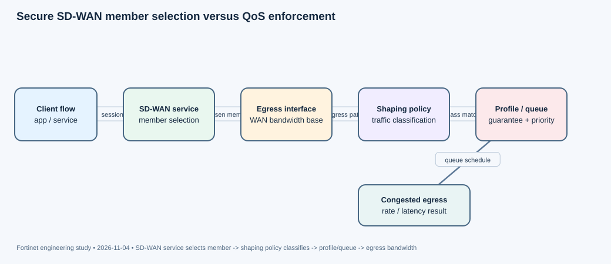

Separate path choice from queue treatment
SD-WAN service rules decide which eligible member carries a session. Traffic shaping and QoS decide how traffic is treated as it leaves an interface: maximum bandwidth, guaranteed bandwidth and relative priority. A correct SD-WAN member selection does not prove the traffic received the intended queue or rate, and a shaping profile does not decide which WAN member is selected. Troubleshoot those planes independently.
Shaper and profile mechanics
Fortinet documents traffic shapers in firewall shaping policies. A shaper can control maximum and guaranteed bandwidth or assign one of three priorities: high, medium or low. An advanced shaping policy can classify traffic into as many as 30 groups. A shaping profile defines the percentage of interface bandwidth allocated to each group. Each group's speed limit is calculated using the outgoing bandwidth limit configured on the interface.
This creates a dependency that is easy to miss: an incorrect interface outgoing-bandwidth value changes the effective allocation for every group in the profile. If a WAN link is provisioned for 100 Mb/s but configured as 20 Mb/s, a profile percentage is calculated against the wrong base. The profile is not a global pool across all SD-WAN members; the documented model is based on the outgoing bandwidth configured on the egress interface.
Example design
Assume the default SD-WAN zone has two members, wan1 and wan2, each with a configured outgoing bandwidth limit of 10 Mb/s. A shaping policy can classify HTTP/HTTPS as high priority and FTP as low priority so that, under contention, interactive web traffic is scheduled ahead of bulk transfers. An advanced profile can allocate a defined share to traffic groups and impose a ceiling/guarantee per group. The SD-WAN service rule still determines whether a session uses wan1 or wan2; the shaping policy then controls the egress treatment on the chosen path.
Build the classification so that it matches the actual traffic attributes used in the policy. If the application is encrypted or unidentified at the point the shaper classifies it, a rule relying on an application signature may not match as expected. Confirm the policy order and the fields available to the shaping classifier rather than assuming that a broad service name is equivalent to an application signature.
Verification sequence
- Confirm the SD-WAN service rule and selected member for the test session.
- Confirm the firewall shaping policy matches the source, destination, service/application and egress path.
- Check the interface outgoing-bandwidth value used by the shaping profile.
- Verify the profile group assignment and shaper guarantee/maximum/priority.
- Generate controlled congestion and compare throughput/latency for high- and low-priority traffic.
A successful ping or a session on the expected WAN member does not prove QoS is working; without congestion, priority differences may not be observable. Likewise, a shaping counter increment does not prove that the correct member or application was selected. Use a repeatable load test and correlate the service rule, shaping-policy hit and egress interface.
Operational context
Recent Community discussions about SD-WAN/IPsec probes show why the path-selection layer must be validated separately. An October 17, 2026 case records an SLA probe entering an IPsec tunnel and being dropped by reverse-path checking because the route back pointed to the default WAN. That is an asymmetric-routing/RPF failure, not a shaping failure. Do not tune QoS when the probe or session is being discarded before it reaches the egress queue.
Primary Fortinet documentation
- SD-WAN traffic shaping and QoS — FortiGate / FortiOS 7.6.3 Administration Guide — authoritative shaper, priority, advanced shaping policy and profile behavior
Community / troubleshooting context (scenario only)
- IPSec tunnel probes drop reverse path check fail, drop — 2026-10-17; recent SD-WAN/IPsec probe asymmetry scenario; not a shaping-policy failure
- Single IPsec tunnel with two WAN interfaces — 2026-10-31; recent WAN redundancy and SD-WAN path design scenario
12-product Community sweep
Search window: October 5–November 4, 2026. Recent articles are used as troubleshooting scenarios only. “No recent scenario verified” means the date-filtered search did not surface a sufficiently grounded technical case; it does not mean the product has no Community content.
| Product area | Recent Community / KB / support findings and scope |
|---|---|
| FortiGate | 2026-10-23 — Administrator SSO authentication fails after upgrade to FortiOS 7.6.8 (recent troubleshooting scenario; separate from hashed-feed lesson) 2026-10-12 — Technical Tip: FSSO resource list (recent FSSO operational resource) No directly matched recent hash-feed failure scenario verified. Community video roundup checked through Oct 30 references the official Oct 28 FortiOS 8.0.1 hashed-feed video; it is discovery context, not a primary lesson source. |
| FortiManager | 2026-10-26 — LDAPS configuration erased after FortiManager upgrade (recent upgrade/CA-certificate preservation scenario) 2026-10-23 — Install failure on 2 GB RAM FortiGates after FortiManager 7.6.8 upgrade (recent install-preview and platform-capability scenario) No directly matched recent ZTP/auto-link troubleshooting scenario verified; the cases above were retained as adjacent deployment/upgrade evidence. |
| FortiAnalyzer | No recent product-specific technical scenario verified in the date-filtered sweep. Broad date-filtered search did not verify a FortiAnalyzer-specific Community/KB troubleshooting article within the window. Primary feature discovery came from the 8.0.0 Administration Guide. |
| FortiSwitch | No recent product-specific technical scenario verified in the date-filtered sweep. No directly dated FortiSwitch troubleshooting case within the window was verified. The October Community video roundup included FortiSwitch product coverage, but it was not promoted to a troubleshooting scenario. |
| FortiAP/Wireless | 2026-10-19 to 2026-10-22 — FortiAP 231K repeated cwWtpd/lldpd restarts and CAPWAP failure (recent adjacent AP control-plane failure scenario) Scenario is AP daemon/CAPWAP instability, not captive-portal authentication. |
| FortiNAC | 2026-10-14 — Checking DNS when Winbind reports WBC_ERR_WINBIND_NOT_AVAILABLE (recent identity/domain-join dependency scenario; FortiNAC and FortiNAC-F scope) 2026-10-12 — A simple example of integrating a network device using the RADIUS protocol only (recent FortiNAC 7.6.7+ integration capability; separate from quarantine) No directly matched recent Security Fabric quarantine scenario verified. |
| FortiNAC-F | 2026-10-27 — FortiNAC-F captive portal User SAML SSO redirect loop caused by SP URL/Portal FQDN mismatch (direct recent scenario for the selected SAML SSO lesson) The case exposes ACS 302, signature validation, registration completion, CoA success and HA re-test evidence. |
| FortiAuthenticator | 2026-10-29 — Resolved EAPPasswordError with IKEv2, EAP-TTLS and FortiAuthenticator 2FA (recent RADIUS/EAP/OTP challenge scenario; distinct from FSSO group projection) 2026-10-12 — Technical Tip: FSSO resource list (recent FSSO operational reference) No directly matched recent LDAP-group-to-FSSO failure case verified. |
| FortiPAM | No recent product-specific technical scenario verified in the date-filtered sweep. No recent 30-day FortiPAM technical troubleshooting article verified. A Community 1.9.0 release deep-dive exists but search metadata places it about two months ago, outside the exclusion window; it was not used as a primary source. |
| FortiSIEM | No recent product-specific technical scenario verified in the date-filtered sweep. No recent 30-day FortiSIEM Community/KB/TAC scenario verified in the date-filtered sweep. |
| FortiSASE | No recent product-specific technical scenario verified in the date-filtered sweep. No recent 30-day FortiSASE Community/KB/TAC scenario verified in the date-filtered sweep. |
| Secure SD-WAN | 2026-10-17 — IPSec tunnel probes drop reverse path check fail, drop (recent SD-WAN/IPsec probe asymmetry scenario) 2026-10-31 — Single IPsec tunnel with two WAN interfaces (recent WAN redundancy and SD-WAN design scenario) Scenario concerns strict RPF and asymmetric return routing, not QoS; it is used only to teach the diagnostic boundary between path viability and shaping. |
50-question graded examination
Choose one answer for every question, then grade the full examination. The correct answer is not revealed until grading. After grading, each of the four choices displays its own technical explanation. Correct-answer positions are balanced across A–D.
Questions50
Choices200
Feedback200 choice-specific explanations
Scoring1 point per question; no partial credit
Q02. Which configuration choice selects the hash database interpretation for the external resource?
Q03. A HTTPS feed intermittently fails after a certificate renewal. Which evidence most directly tests server identity validation?
Q04. After a FortiOS 7.6.8 upgrade, administrator SSO fails with 'Single Sign-On Failed' while local login remains available. What is the safest first response?
Q05. A factory-default FortiGate should discover FortiManager through DHCP Option 240/241, but it never contacts the manager. Which prerequisite is most important to verify?
Q06. A one-time CLI script must create interfaces on a FortiGate-VM before other templates are installed. Which mechanism fits this requirement?
Q07. A model device has a policy package assigned, but the package is targeted only at a device group. What should the engineer do before the real FortiGate comes online?
Q08. After upgrading FortiManager, an LDAPS configuration without ca-cert disappears. Which upgrade-preparation action matches the documented Community case?
Q09. A FortiAnalyzer alert is visible, but no FortiGate action runs. Which missing configuration is the most likely next checkpoint?
Q10. A rule matches only records that have already been moved to Archive logs. Why does the alert handler not fire?
Q11. A detection requires event A, then event B within a sequence. Which handler type is appropriate?
Q12. Which statement correctly describes the FortiAnalyzer Automation Stitch integration?
Q13. The ICL fails, but both FortiSwitch peers are still forwarding. What does split-brain detection protect against?
Q14. Both peers have split-brain priority 50. Which peer becomes dormant when the ICL-only split-brain condition is detected?
Q15. A peer reboots and the other peer remains online. Which release behavior helps avoid mistaking this for an ICL-only split-brain event?
Q16. A FortiSwitchOS 7.6.2 design dual-homes to third-party switches. Which caveat matters for split-brain design?
Q17. An external portal accepts the user's credentials but FortiGate never completes the pending login. Which field must the portal preserve from the original redirect?
Q18. A client associates and authenticates successfully but cannot reach the Internet. Which next check best separates identity success from authorization?
Q19. Which setting protects credentials returned from an external captive portal to FortiGate?
Q20. A FortiAP 231K repeatedly restarts cwWtpd/lldpd and CAPWAP fails. What does the restart log prove?
Q21. FortiGate logs show the Quarantine via FortiNAC stitch fired, but the endpoint still reaches production. What is the most likely missing dependency?
Q22. A webhook triggers quarantine for the wrong endpoint. Which part of the request should be validated first?
Q23. Which observation proves FortiNAC actually changed the endpoint state rather than only receiving the FortiGate trigger?
Q24. A FortiNAC domain join reports WBC_ERR_WINBIND_NOT_AVAILABLE and cannot obtain domain details. Which dependency should be tested before changing user credentials?
Q25. A recent FortiNAC-F SAML case shows ACS POST 302, SignatureValidator success, Registration complete and CoA success, but the browser still loops. Which mismatch should be checked?
Q26. SAML signature validation succeeds, but the user lands in the wrong FortiNAC access group. What should be inspected?
Q27. The ACS receives a SAML response but signature verification fails after an IdP certificate rollover. What is the best corrective path?
Q28. A primary-node SAML test succeeds. What additional test is required before declaring the integration production-ready?
Q29. A Remote LDAP group has Include for FSSO enabled, but the option was unavailable for another group. Which retrieval mode is required?
Q30. A group is flagged Include for FSSO, but it never appears in the FortiGate filter picker. Which second setting must be checked?
Q31. A user can authenticate successfully against LDAP, but a FortiGate policy using an FSSO group does not match. What does the successful LDAP bind fail to prove?
Q32. A FortiClient IKEv2 EAP-TTLS login reports EAPPasswordError, while LDAP, FortiToken and the RADIUS policy are already working. Which diagnostic boundary is most relevant?
Q33. A root FortiPAM and two gateways form a chain to an isolated SSH target. Which gateway needs direct network access to that target?
Q34. A downstream gateway establishes TLS to the root, but it is not dynamically discovered. Which pair of settings is most directly relevant?
Q35. Which default transport configuration is documented for the FortiPAM Reverse Service?
Q36. The dynamic gateway chain is visible at the root, but launching a target fails. Which next check is most precise?
Q37. An incident exists, but no Automation Policy sends an email. Which first check most directly tests whether the policy should match?
Q38. A policy applies to a device group except one excluded device group. Where is the exclusion represented?
Q39. A policy matches and should create a case, but the case action is unavailable. Which prerequisite pair should be checked?
Q40. An incident is created and quickly auto-cleared. The policy is configured not to notify on automatically cleared incidents. What should happen?
Q41. A file is uploaded directly to a SaaS tenant and later flagged by API-based CASB DLP. Which statement best describes the inspection plane?
Q42. A custom pattern misses large compressed documents even though the regex is correct. Which settings are most likely to explain the gap?
Q43. A custom regex exists, but no DLP alert appears for a supported SaaS file. Which policy object binds the pattern to app activity?
Q44. The API connector reports healthy, but a file is never scanned. What is the most useful next investigation?
Q45. A session uses the expected WAN member but bulk traffic still starves voice traffic during congestion. Which layer should be examined next?
Q46. An advanced shaping profile allocates percentages to traffic groups. Which configured value determines each group's effective speed limit?
Q47. Why may a high-priority HTTP/HTTPS flow and a low-priority FTP flow show similar throughput in an idle lab?
Q48. An SLA probe enters an IPsec tunnel and debug flow reports reverse path check fail, drop. What should be checked before tuning QoS?
Q49. A FortiManager 7.6.8 install preview includes udp-not-quic allow, but the target FortiGate rejects the command or verification cannot read it. What is the best next action?
Q50. A SAML ACS POST returns 302, the signature is verified, registration completes and CoA succeeds. Which conclusion is best supported?
Research and validation artifacts
- Machine-readable exclusion inventory (156 published lesson records)
- 12 selected semantic fingerprints and nearest prior-topic comparisons
- Product-by-product Community sweep and scenario availability
- Full lesson bank
- 50-question bank with all choice feedback
- Diagram manifest
- Editable diagram specifications